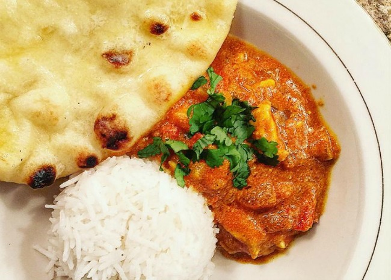

Chicken Curry and Rice

Description
This looks like some good chicken curry
Ingredients:
- 2 pounds of skinless, boneless chicken breast halves
- 2 teaspoons of salt
- 1/2 cup of cooking oil
- 1 1/2 cups of chopped onion
- 1 tablespoon of minced garlic
- 1 tablespoon of curry powder
- 1 tablespoon of ground cumin
- 1 tablespoon of ground turmeric
- 1 tablespoon of garmam masala
- 1 tablespoon of ground coriander
- 1 tablespoon of crushed tomatoes
Steps:
- Sprinkle the chicken breasts with 2 teaspoons salt.
- Heat the oil in a large skillet over high heat; partially cook the chicken in the hot oil in batches until completely browned. Transfer the browned chicken breasts to a plate and set aside.
- Reduce the heat under the skillet to medium-high; add the onion, garlic, and ginger to the oil remaining in the skillet and cook and stir until the onion turns translucent, about 8 minutes. Stir the curry powder, cumin, turmeric, coriander, cayenne,
and 1 tablespoon of water into the onion mixture; allow to heat together for about 1 minute while stirring. Mix the tomatoes, yogurt, 1 tablespoon chopped cilantro, and 1 teaspoon salt into the mixture.
Return the chicken breast to the skillet along with any juices on the plate. Pour 1/2 cup water into the mixture; bring to a boil, turning the chicken to coat with the sauce.
Sprinkle the garam masala and 1 tablespoon cilantro over the chicken.
- Cover the skillet and simmer until the chicken breasts are no longer pink in the center and the juices run clear, about 20 minutes. An instant-read thermometer inserted
into the center should read at least 165 degrees F (74 degrees C). Sprinkle with lemon juice to serve.
Return Home